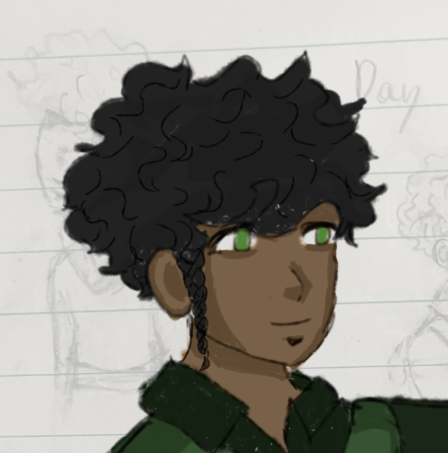

Characters
Lucus

he/him
Age: 14-19
Species- Human (Actually a half elf)
Gifted -alchemy: can create weapons, architecture, technology and can use and understand them at a masterful level
Description: dark drown wavy hair and red eyes a bit shorter than Kai and
Lucus lives with his sister Amarianna until she dies in a fire. The fire was set by castle police unbeknownst to him at the time. Adrien finds out before it happens and sends Kai and Emari to go stop the attack but doesn’t arrive in enough time and finds Lucus running away from the house and then passing out. He wakes up in their cart as Emari tends to his wounds Kai reveals that Adrien sent them for him and his sister died in the fire. Adrien being a person he knew since he was a little kid he trusted him. About 2 years prior to this incident Adrien would come over regularly bringing with him food and cool things he got from traveling. Adrien and his sister have been very close friends for a long time. Lucus was raised by his sister in a small house in the woods in the outskirts. They were fairly close to a small town where Lucus would go get food after his sister felt comfortable enough to let him leave the house. He was brought up being told by his sister that their family died by natural means Adrien seemed to know a bit about them but whenever Lucus used to try to ask he would be redirected to his sister who insisted that they shouldn’t be talked about. She was always very secretive about them. When he was 11 he saw Adrien and his sister get into a fight Adrien never came back after that. After his sister was killed and Kai took he back to base he saw Adrien again who explained to him a bit about what happened to his sister mostly that she did something that made her a fugitive and was killed by castle police and that he left 3 years ago to make sure that no one could find the two of them. He also explained that he created a group that went against the royals and protected normal citizens and he wanted Lucus to help him. After being in the rebellion for a while he eventually warmed up to everyone though he was very cold to people especially Kai who he hated because of his optimistic attitude and because he reminded him of his sister. While Lucus was examining some books Kai stole from the inner city he found on the noble families in the city. As he was looking through the book trying to find any information on some of the royal guards he finds someone with his same surname, getting his curiosity piqued by this he goes looks into it finding someone named (father’s name), (mother’s name) and Amarieanna which was his sister’s name. He continues reading and finds out that the father worked directly under the king making weapons and his mother designed architecture. Though he was skeptical that they actually had any relation to him this was immediately eliminated when he saw a family portrait with his sister in it though she was much younger. Feeling lied to and betrayed he confronts Adrien about this he tells him a bit about his sister’s past and what happened t9o his family but it was minimal which didn't satisfy Lucus and caused them to get into a fight and Lucus runs away. Adrien doesn’t really stop him but has someone track him to make sure he didn’t get himself killed. After going off into the world alone he ends up going back to his childhood home that was now mostly burnt to the ground but he tried to recover what he could. He finds evidence of his past life and finds out his sister killed their father through parts of old letters he recovered that was sent between her and Adrien. This causes him to resent her for taking away a family and life that he could have had before he was old enough to even remember. He is later found by the castle police who take him as prisoner. After being tortured for information on his sister and if he knew any whereabouts of Adrien he ends up telling them why he was there and his lineage. This is later picked up by the king who gives him a proposition for Lucus to work for him in return he would give Lucus back his family's status. He ends up working under the king for a while before the king doesn't keep his side of the deal and essentially uses him as a personal loyal soldier. He decides to run away from the castle now very angry at everyone feeling very lied to and abused and plans the downfall of everything as a whole. Adrien finds out of his whereabouts from the destruction Lucus tended to leave whenever he was confronted by castle police or any member of the rebellion who worked under Adrien.
Adrien

He/him
20s
Species- Human (later revealed as a half elf) gifted - increased intelligence and unspecified
Description: blond straight hair down to his shoulders and blue eyes tall and lightly built figure has many outfit changes
Background: He was originally from a small village on the outskirts but was brought into the royal family at a young age because of his unique abilities and intelligence that he displayed at a young age during the exams. He was taken from his parents and placed into this camp with other gifted children for 2 years until he was 6 when the royal family caught wind of him and decided to adopt him into the royal family. They decided to make him seem like a hidden royal child so people wouldn't know that the king couldn’t reproduce and cut off the tips of his ears making them into a rounded shape and cut his tail and gaslit him for years into thinking his life before the castle was not real. After the king managed to conceive of an actual child Adrien was pushed aside and was taken out of homeschooling that was to prepare him for taking the crown into putting him in public school where he was bullied for being a human since he decided to keep his royal status hidden he soon me Amarieanna who was also regularly bullied for being boyish and not fitting into her noble role. After helping her they decided to become friends at this point Adrien has fallen hard for her. They start sort of dating unofficially because they refuse to admit they have feelings for each other. Later when they are older he joins the royal guard because the king doesn’t really like him all that much. After Amarieanna went rogue running away with her brother he is personally sent to find and kill her. He does find her though he is not able to kill her and helps her run away. After a few more years in the royal guard and of sneaking off to join Amarieanna and Lucus he decides to leave due to being caught and almost arrested. He lives in the woods with Lucus and Amarieanna helping them. Until he decided to just leave and only rarely return. During his time away he was plotting to stage a coup against the king though after seeing the suffering that the regular people who live outside the capital go through he gains people for his cause by helping and gaining the trust of the common people. Eventually he finds out that there were people who found Amarieanna and sent people to go help them though it was too late and he took Lucus under his wing until Lucus decided to run away. At this point he goes after Lucus due to him knowing that Amarieanna would want him to keep her brother safe and he knew that Lucus was very powerful due to his lineage and could be an asset.
Kai
After his birth his father was arrested and publicly killed in his town. The guard also took all of his family’s money and majority of their possessions. Knowing that they were coming from him his father hid him and his mother away until everything blew over. His dad was a humanitarian of sorts and gave food and water to the people in his town as well as helped build homes. Since his father was persecuted he grew up fatherless with with his mother. Most of their possessions were taken away making them poor with only their apartment and very little food. When he was about five he learned of his father from hearing the stories of him from the other villagers. He also given his father’s guitar and the hoodie he wore all of the time.(he still has them to this day) When he was about 7 he met Ava. Ava was also poor like majority of their small village. They became good friends and played with each other and taught each other. Ava’s father was a musician who was ostracized from the capital taught him how to play his father’s guitar. Also sort of taught him how to read though he is still very bad at it and doesn’t know how to read /write most words till this day. When he turned 10 he started to stealing food and water along with other things with Ava to help his mother, who essentially turned a blind eye to it so he wouldn’t get in trouble. A couple of years later he meets Vin who was the same age. It starts with him giving Kai fruit from his fathers stand that he worked at in a basket of paper flowers and cute notes Ava would have to read for him every couple of days. They soon started meeting up going on dates around town ect. Vin is kicked out by his father after finding out he was dating Kai. Kai’s mother allows Vin to stay with her and Kai she dies one day for unknown reasons presumably murdered by the guards. Vin takes Kai to the base of a rebel group and the two of them stays there for a while. Vin gradually starts becoming more aggressive he would get mad at Kai easily turning very abusive and becoming defensive when Kai would try to confront him. Vin eventually falls into a deep depression and starts pushing Kai away and doing stupid and dangerous things. Eventually his actions get him killed and causes the guards to find and arrest or kill majority of the rebel group. In an attempt to try to save Vin Kai gets arrested luckily he is saved by Adrien who brings in the others who he could help. Kai initially wants nothing to do with him but they eventually get used to each other and Kai eventually gets adopted into their group. From there he meets the main character Lucus. Lucus doesn’t appreciate his over the top personality at first and actively hates him for it. But eventually Lucus warms up to Kai and they both start hanging out with each other more. Kai teaches Lucus how to better defend himself without his gift and first aid after realizing he had no idea what he was doing. Soon Lucus becomes very attached to him seeing him as an older brother. >
Kal/Kalani

Kal has always been severely depressed only finding happiness in the people he is closest to and researching and reading. He likes to bottle up his emotions bury himself in books disregarding everyone else. He came from a fairly well off family living majority of his life in the capital before choosing to estrange himself from his family and move to a smaller town sometimes traveling. In his younger years he was bullied a lot for acting and dressing like I style never liking feminine clothes and usually wearing the boys clothes lower citizens wear because his parents wouldn’t buy him the clothes that he wanted. His father always berated him for acting like a boy calling him names and being abusive by trying to instill traits of toxic masculinity in him to dissuade him from being too masculine. This only made him more aggressive and bottle up his emotions and act more masculine as that is what he was taught is manly from a young age. The constant abuse and his developed mentality about what is and isn’t masculine only worsened his depression leading to him attempting suicide by attempting to drown himself in the river. Kai finds his body washed up on the shore under the bridge passed out but still alive and treats his injuries staying with him until he wakes up to make sure that no one with bad intentions hurt him. Kalani eventually wakes up though in a lot of pain from the injuries he sustained. Kai offers to take him home but Kalani is too scared because of what his father would do if he found out about the suicide attempt so Kai decided to stay with him the night giving Kalani his hoodie(he never returns that hoodie and wears it all the time now) and jacket to keep him warm. Kal does eventually decide to go home the next day covering up the injuries with clothes. Kai who was staying in the capital for a couple of more weeks for a mission bumps into Kalani while he is at college(not really college but that’s the closest thing I can think to compare it to it’s more like an apprenticeship course). They decide to start meeting up more often Kal because he was starting to like Kai’s company and he didn’t have any other friends and Kai more because he was concerned about Kal’s wellbeing. After spending time together Kal starts opening up to Kai more and eventually becoming attracted to him. Kai notices the crush but doesn’t say anything not really interested in a relationship considering his last boyfriend died. As they talk more Kai also realizes how lonely and insecure and depressed Kal was decides to adopt him into his group of friends. He also started forcing Kal to take care of himself reminding him to eat regularly, staying with him during his breakdowns, and keeping him from self harming. Even after Kai had to go they still kept in Kai making sure to come back to visit. Kai eventually started developing feelings making it mutual. He eventually asks Kal to be his boyfriend and they started dating. Kal decided to drop out of college(not really college) and start studying medicine on his own. He also decides to leave his father to pursue a healthier life and relationships. He moves out of the capital into a smaller town where he practices medicine and has a little plant shop with Cora a girl he quickly became friends with after moving there.